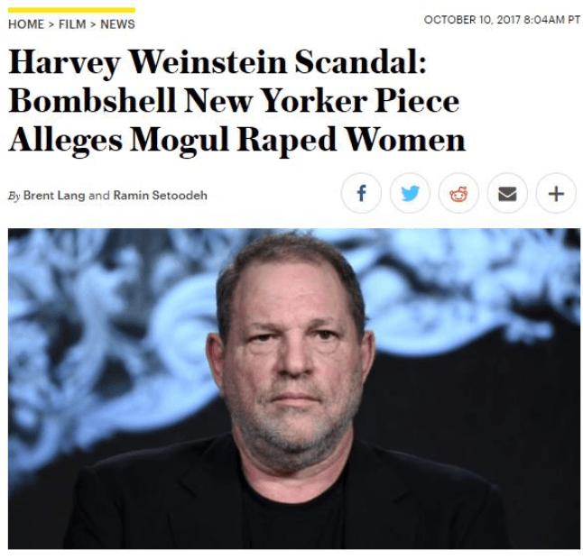
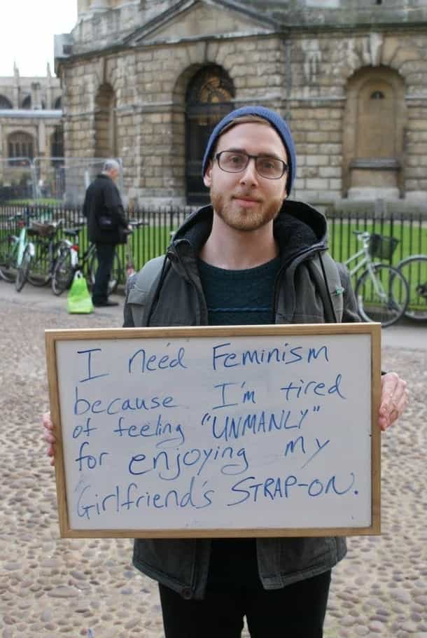
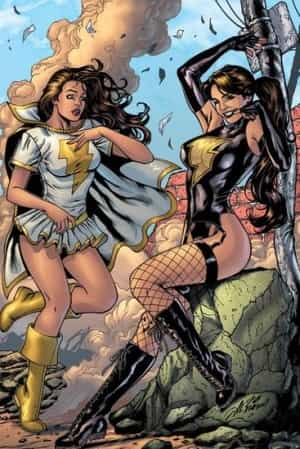
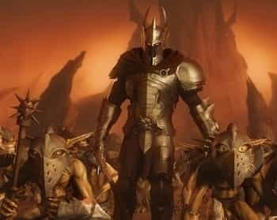

Sex and its bizarrely interesting, particularly American permutations have been in the news a lot in recent days, in particular amongst the alternate media. Of course, everybody with a pulse has heard about Harvey Weinstein and his Hollywood cohorts using the age old “casting couch” while hypocritically stumping for Hillary Clinton and claiming to “empower” women through contrived “ass kicking woman in tight pants” movies.
Beyond that, renegade non-SJW nerds such as myself were unanimously amused in the schadenfreude manner when humorless social justice schoolmarms like Joss Whedon were outed for their rampant infidelity, or the ongoing tally of anti-Gamergaters and “feminist allies” that have been caught sexually harassing, abusing, or occasionally even raping “m’lady” that they were supposed to be valiantly defending—and let’s not forget the classic examples of this happening.
While we all can point and laugh at this, it does raise a very important question that, as far as I am aware, has not received the sociological/psychological attention that it deserves. And that question is: why do so many male feminists come off as, and show themselves to be, complete creeps?

A Point of Contention
Now, just to clarify, when I use the term “male feminist”, I am not referring to a man who merely thinks that a woman can choose to have a career OR choose to be a homemaker and equality under the law and generally wants the sexes to both be convivial and content with their lot in life. I consider myself to be this and I presume most people reading this do as well.
No, by “male feminist”, I mean the loud and obnoxious sort who denounce their fellow men for being masculine, get all giddy over any subversion to masculinity or a strong and dominant woman, go out of their way to be as unmasculine as possible, criticize works of fiction for not being sufficiently “woke”—in short, the sort of guy who refers to himself as a male feminist.

More likely than not, these spindly douchebags are the ones getting busted for behavior far more “misogynistic” than anything us atavistic reactionary cavemen are doing to women. But why? I feel that my unique position as something of a former leftist who might have gone down that route had I had a few more bad days, might shine some light on things.
A Thought Experiment
Imagine that you were a child like I was as a young lad, and probably most of these male feminist cretins were as well—smarter than most of your peers at school, but also shy, wimpy, and bookish. You probably grew up watching a lot of movies and cartoons and playing lots of video games. While you were too shy to talk to girls made of flesh and bone, you were surrounded by idealized, impossibly beautiful and pure damsels in the various media you consumed, as well as cartoonishly dark, seductive, and licentious “bad girls” in that same media. Thus, the first foundation stone is lain in the male feminist psyche—the good old Madonna and Whore complex!

This is not to take the SJW “women should be realistic but also perfect” malarkey, media is based on idealization and exaggeration after all. Rather the lack of real life female interaction is the problem here (i.e., the fact that the only interaction with females is from media is where the problem lies).
The portrayal of men in action movies and video games is also a problem, as most things intended for kids and adolescents tend to be somewhat black and white in terms of morality, which has some adverse effects when combined with a nerd’s daily experiences of getting beat up and wedgied after school. In the misfit’s mind, the bullies are Sauron, Ganondorf, Lex Luthor, and the oppressed nerd is the hero, of course. So you can add a dollop of a hero complex.

“Gimme your lunch money, faggot!”
Puberty comes and the nerd is now substantially more randy and still miserable, because now his unpopularity includes not having sex in addition to mockery and bullying. Said nerd has probably moved on to more adult, more sexual forms of nerd media—Conan, Elric, Dune, and the like, and this combined with his raging hormones makes him crave sex, but of course Chad Thundercock is—in his mind—bogarting sex from him.
Knowing that he can’t compete with “Chad”, and still having an idealized concept of womanhood, he decides to forgo the whole masculinity “thing”, spitting in the face of the “dudebros” and embracing womanhood. The feminist girls in school tolerate his supplicant non-offensiveness more than any other woman ever has, if their agenda goes through he’ll have his final revenge on the cool kids, and he might even get in bed with one of his new cohorts, because unlike Stacy and her merry slut brigade, the feminist girls see how good he is.
Does that sound ridiculous? If so, bear in mind that until I was about 15 years old, I literally could not conceive of any way to get to speak to a girl that didn’t involve me rescuing her from armed robbery/assault, so many young men do unfortunately think like this! I had that weird, video game induced “Rescue-the-princess” Madonna/Whore thing, and yes, I despised “Chads” and “Dudebros”.
I of course changed my ways when I got into fitness and the “school of hard knocks” of learning how to attract women in college, but let’s pretend that I didn’t. Let’s follow our nerd into his adulthood.
Nerd Life Part Two
Still sexually frustrated because his feminist friends have inevitably been passing him up for sex in favor of those Neanderthals they’re supposed to hate, he’s starting to resent women—keeping hold of his idealized concept of femininity mainly out of habit and because the alternative (Admitting that the dudebros were right) is so much worse to him.
He won’t force himself on a woman—heaven forbid, that’s disgusting—so he just continues to hate them silently… but then! He achieves his dream job-writing for a leftist news rag, or Marvel Comics, or sells a TV pilot or movie script.
Now all of a sudden he’s a star, he has ascended to a similar position in society as Chad Thundercock, but via being a nerd! And best of all, for the first time, women are giving him the time of day—in fact, they’re practically throwing themselves at him. Beautiful young women, the kind that have been mocking and bullying him since kindergarten.
Those half-remembered dreams of being a swaggering alpha male brute, suppressed for so long, come to the surface, and he revels in his newfound status, “casting couch”-ing most of his girls and coercing or harassing the ones who don’t put out. And to an extent he also sublimates his desire for vengeance against the Stacies of the world by defiling their beauty with his flabby unpleasantness.
Pleasurable to body and fulfilling to the spirit in the short term, he ultimately feels kind of bad, because this is going against the feminist ideals he has been imbibing since he was a teenager. Thus, he overcompensates by supporting female politicians and writing overblown “Strong women” into his work, but not actually changing his ways of course, because he’s having sex, bro!
The cycle of cognitive dissonance and mental instability continues until it all comes crashing down, as we’re seeing now.
Speculation?
This, of course, was just a theory, based on observation of the objective unattractiveness of most male feminists, their behavior, and my own time as a rage-filled teenage nerd and incel. As it is, it seems plausible if nothing else, and I predict that as the sexual situation in the west remains dysfunctional, expect more of this beta male rage. It will not be the explosive, violent, Marc Lepine type, instead it will be this sort of duplicitous rank hypocrisy from men in power.
And if you think this is just the words of some misogynistic crank Return of Kings writer, keep in mind that many women are starting to learn that male feminists tend to be pretty terrible people, and likely many more will in the future.
Read More: Why Feminists Hate Male Sexuality